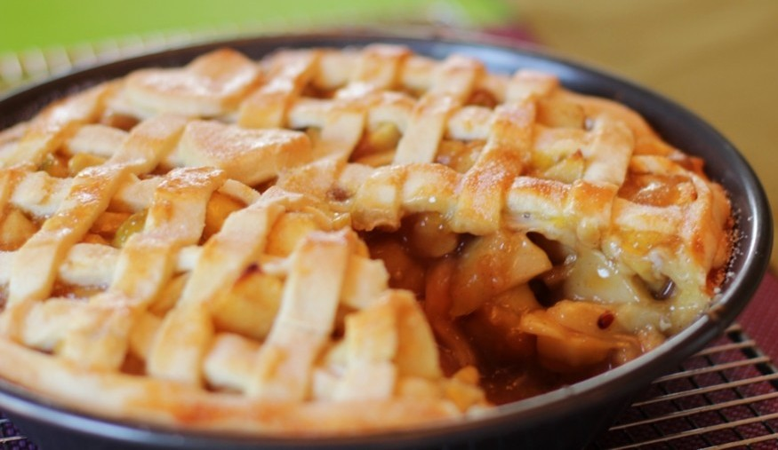

Culinária Feliz
Culinária Feliz
Miguel Reis
19 de Outubro de 1991
Ingredientes
- 3 xícaras (chá) de farinha de trigo
- 1 xícara (chá) de açúcar
- 2 ovos
- 3 colheres (sopa) de manteiga
- 1 colher (sopa) de fermento em pó
- 3 xícaras (chá) de leite
- 2 gemas
- 1 xícara (chá) de açúcar
- 3 colheres (sopa) de amido de milho
Modo de Preparo
1 Misture a farinha, o açúcar, os ovos, a manteiga e o fermento em uma tigela grande. Mexa bastante com as mãos, até atingir o ponto, que é quando ela não está mais grudenta. Você pode dar ponto na massa sobre uma superfície enfarinhada, mas não adicione farinha demais, senão ela vai ficar seca e vai esfarelar.
2 Faça uma bola com a massa e divida ao meio. Com uma das metades, forre uma forma de fundo removível untada, sem esquecer das bordas, que devem ir até aproximadamente a metade da altura da forma. A espessura pode variar conforme o diâmetro da forma, mas deve chegar a um centímetro. A outra metade da massa será usada na decoração da torta.
3 Leve ao forno para assar por aproximadamente 20 minutos.
4 Retire e espere esfriar para receber o recheio.

Voltar